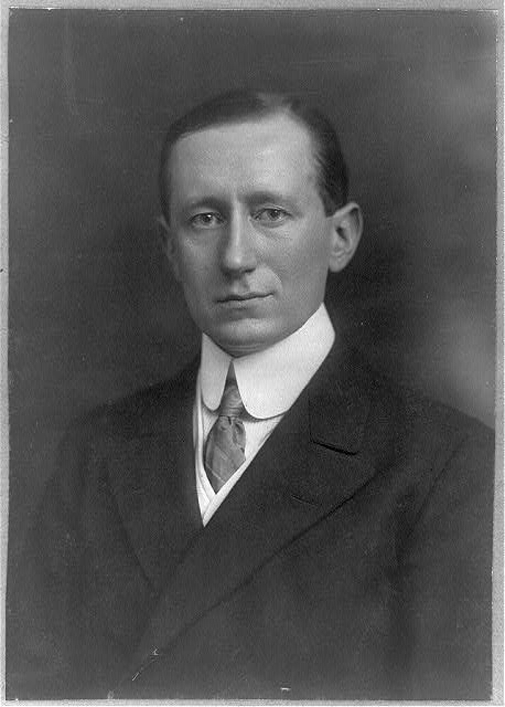
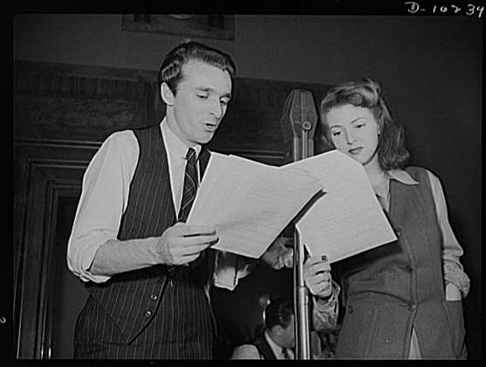
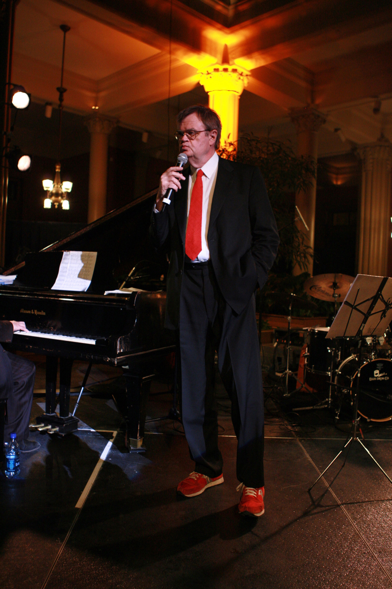

At its most basic level, radioCommunication through the use of radio waves. is communication through the use of radio waves. This includes radio used for person-to-person communication as well as radio used for mass communication. Both of these functions are still practiced today. Although most people associate the term radio with radio stations that broadcast to the general public, radio wave technology is used in everything from television to cell phones, making it a primary conduit for person-to-person communication.
Guglielmo Marconi is often credited as the inventor of radio. As a young man living in Italy, Marconi read a biography of Hienrich Hertz, who had written and experimented with early forms of wireless transmission. Marconi then duplicated Hertz’s experiments in his own home, successfully sending transmissions from one side of his attic to the other.“Guglielmo Marconi,” American Experience: People & Events, http://www.pbs.org/wgbh/amex/rescue/peopleevents/pandeAMEX98.html. He saw the potential for the technology and approached the Italian government for support. When the government showed no interest in his ideas, Marconi moved to England and took out a patent on his device. Rather than inventing radio from scratch, however, Marconi essentially combined the ideas and experiments of other people to make them into a useful communications tool. Lewis Coe, Wireless Radio: A Brief History (Jefferson, NC: MacFarland, 1996), 4–10.
Figure 7.2
Guglielmo Marconi developed an early version of the wireless radio.
In fact, long-distance electronic communication has existed since the middle of the 19th century. The telegraphEarly communication technology that used wires to transmit messages through a series of clicks. communicated messages through a series of long and short clicks. Cables across the Atlantic Ocean connected even the far-distant United States and England using this technology. By the 1870s, telegraph technology had been used to develop the telephone, which could transmit an individual’s voice over the same cables used by its predecessor.
When Marconi popularized wireless technology, contemporaries initially viewed it as a way to allow the telegraph to function in places that could not be connected by cables. Early radios acted as devices for naval ships to communicate with other ships and with land stations; the focus was on person-to-person communication. However, the potential for broadcasting—sending messages to a large group of potential listeners—wasn’t realized until later in the development of the medium.
The technology needed to build a radio transmitter and receiver was relatively simple, and the knowledge to build such devices soon reached the public. Amateur radio operators quickly crowded the airwaves, broadcasting messages to anyone within range and, by 1912, incurred government regulatory measures that required licenses and limited broadcast ranges for radio operation.Thomas White, “Pioneering Amateurs (1900–1917),” United States Early Radio History, http://earlyradiohistory.us/sec012.htm. This regulation also gave the president the power to shut down all stations, a power notably exercised in 1917 upon the United States’ entry into World War I to keep amateur radio operators from interfering with military use of radio waves for the duration of the war.Thomas White, “Pioneering Amateurs (1900–1917),” United States Early Radio History, http://earlyradiohistory.us/sec012.htm.
Wireless technology made radio as it is known today possible, but its modern, practical function as a mass communication medium had been the domain of other technologies for some time. As early as the 1880s, people relied on telephones to transmit news, music, church sermons, and weather reports. In Budapest, Hungary, for example, a subscription service allowed individuals to listen to news reports and fictional stories on their telephones.White, “News and Entertainment by Telephone (1876–1925),” United States Early Radio History, http://earlyradiohistory.us/sec003.htm. Around this time, telephones also transmitted opera performances from Paris to London. In 1909, this innovation emerged in the United States as a pay-per-play phonograph service in Wilmington, Delaware.White, “News and Entertainment by Telephone (1876–1925),” United States Early Radio History, http://earlyradiohistory.us/sec003.htm. This service allowed subscribers to listen to specific music recordings on their telephones.White, “News and Entertainment by Telephone (1876–1925),” United States Early Radio History, http://earlyradiohistory.us/sec003.htm.
In 1906, Massachusetts resident Reginald Fessenden initiated the first radio transmission of the human voice, but his efforts did not develop into a useful application.John Grant, Experiments and Results in Wireless Telegraphy (reprinted from The American Telephone Journal, 49–51, January 26, 1907), http://earlyradiohistory.us/1907fes.htm. Ten years later, Lee de Forest used radio in a more modern sense when he set up an experimental radio station, 2XG, in New York City. De Forest gave nightly broadcasts of music and news until World War I halted all transmissions for private citizens.White, “Pre-War Vacuum Tube Transmitter Development 1914–1917),” United States Early Radio History, http://earlyradiohistory.us/sec011.htm.
After the World War I radio ban lifted with the close of the conflict in 1919, a number of small stations began operating using technologies that had developed during the war. Many of these stations developed regular programming that included religious sermons, sports, and news.White, “Broadcasting After World War I (1919–1921),” United States Early Radio History, http://earlyradiohistory.us/sec016.htm. As early as 1922, Schenectady, New York’s WGY broadcast over 40 original dramas, showing radio’s potential as a medium for drama. The WGY players created their own scripts and performed them live on air. This same groundbreaking group also made the first known attempt at television drama in 1928.Elizabeth McLeod, “The WGY Players and the Birth of Radio Drama,” 1998, http://www.midcoast.com/~lizmcl/wgy.html.
Businesses such as department stores, which often had their own stations, first put radio’s commercial applications to use. However, these stations did not advertise in a way that the modern radio listener would recognize. Early radio advertisements consisted only of a “genteel sales message broadcast during ‘business’ (daytime) hours, with no hard sell or mention of price.”Christopher Sterling and John Kittross, Stay Tuned: A History of American Broadcasting, 3rd ed. (New York: Routledge, 2002), 124. In fact, radio advertising was originally considered an unprecedented invasion of privacy, because—unlike newspapers, which were bought at a newsstand—radios were present in the home and spoke with a voice in the presence of the whole family.Christopher Sterling and John Kittross, Stay Tuned: A History of American Broadcasting, 3rd ed. (New York: Routledge, 2002), 124. However, the social impact of radio was such that within a few years advertising was readily accepted on radio programs. Advertising agencies even began producing their own radio programs named after their products. At first, ads ran only during the day, but as economic pressure mounted during the Great Depression in the 1930s, local stations began looking for new sources of revenue, and advertising became a normal part of the radio soundscape.Christopher Sterling and John Kittross, Stay Tuned: A History of American Broadcasting, 3rd ed. (New York: Routledge, 2002), 124.
Not long after radio’s broadcast debut, large businesses saw its potential profitability and formed networksOriginally groups of radio stations that shared the same programming, these became large broadcasting corporations in control of radio programming.. In 1926, RCA started the National Broadcasting Network (NBC). Groups of stations that carried syndicated network programs along with a variety of local shows soon formed its Red and Blue networks. Two years after the creation of NBC, the United Independent Broadcasters became the Columbia Broadcasting System (CBS) and began competing with the existing Red and Blue networks.Christopher Sterling and John Kittross, Stay Tuned: A History of American Broadcasting, 3rd ed. (New York: Routledge, 2002), 117–119.
Although early network programming focused mainly on music, it soon developed to include other programs. Among these early innovations was the variety showA radio program genre that generally revolved around a host and cast that participated in sketch-comedy and musical numbers.. This format generally featured several different performers introduced by a host who segued between acts. Variety shows included styles as diverse as jazz and early country music. At night, dramas and comedies such as Amos ’n’ Andy, The Lone Ranger, and Fibber McGee and Molly filled the airwaves. News, educational programs, and other types of talk programs also rose to prominence during the 1930s.Christopher Sterling and John Kittross, Stay Tuned: A History of American Broadcasting, 3rd ed. (New York: Routledge, 2002), 128–138.
In the mid-1920s, profit-seeking companies such as department stores and newspapers owned a majority of the nation’s broadcast radio stations, which promoted their owners’ businesses.“Radio’s Emergence,” Oracle ThinkQuest: The 1920s, http://library.thinkquest.org/27629/themes/media/md20s.html. Nonprofit groups such as churches and schools operated another third of the stations. As the number of radio stations outgrew the available frequencies, interference became problematic, and the government stepped into the fray.
The Radio Act of 1927 established the Federal Radio Commission (FRC) to oversee regulation of the airwaves. A year after its creation, the FRC reallocated station bandwidths to correct interference problems. The organization reserved 40 high-powered channels, setting aside 37 of these for network affiliates. The remaining 600 lower-powered bandwidths went to stations that had to share the frequencies; this meant that as one station went off the air at a designated time, another one began broadcasting in its place. The Radio Act of 1927 allowed major networks such as CBS and NBC to gain a 70 percent share of U.S. broadcasting by the early 1930s, earning them $72 million in profits by 1934.Robert W. McChesney, “Media and Democracy: The Emergence of Commercial Broadcasting in the United States, 1927–1935,” in “Communication in History: The Key to Understanding,” OAH Magazine of History 6, no. 4 (1992). At the same time, nonprofit broadcasting fell to only 2 percent of the market.Robert W. McChesney, “Media and Democracy: The Emergence of Commercial Broadcasting in the United States, 1927–1935,” in “Communication in History: The Key to Understanding,” OAH Magazine of History 6, no. 4 (1992).
In protest of the favor that the 1927 Radio Act showed toward commercial broadcasting, struggling nonprofit radio broadcasters created the National Committee on Education by Radio to lobby for more outlets. Basing their argument on the notion that the airwaves—unlike newspapers—were a public resource, they asserted that groups working for the public good should take precedence over commercial interests. Nevertheless, the Communications Act of 1934 passed without addressing these issues, and radio continued as a mainly commercial enterprise.Robert W. McChesney, “Media and Democracy: The Emergence of Commercial Broadcasting in the United States, 1927–1935,” in “Communication in History: The Key to Understanding,” OAH Magazine of History 6, no. 4 (1992).
The so-called Golden Age of Radio occurred between 1930 and the mid-1950s. Because many associate the 1930s with the struggles of the Great Depression, it may seem contradictory that such a fruitful cultural occurrence arose during this decade. However, radio lent itself to the era. After the initial purchase of a receiver, radio was free and so provided an inexpensive source of entertainment that replaced other, more costly pastimes, such as going to the movies.
Radio also presented an easily accessible form of media that existed on its own schedule. Unlike reading newspapers or books, tuning in to a favorite program at a certain time became a part of listeners’ daily routine because it effectively forced them to plan their lives around the dial.
During the Great Depression, radio became so successful that another network, the Mutual Broadcasting Network, began in 1934 to compete with NBC’s Red and Blue networks and the CBS network, creating a total of four national networks.Sean Cashman, America in the Twenties and Thirties: The Olympian Age of Franklin Delano Roosevelt (New York: New York University Press, 1989), 328. As the networks became more adept at generating profits, their broadcast selections began to take on a format that later evolved into modern television programming. Serial dramas and programs that focused on domestic work aired during the day when many women were at home. Advertisers targeted this demographic with commercials for domestic needs such as soap.“Soap Opera,” The Museum of Broadcast Communications, http://www.museum.tv/eotvsection.php?entrycode=soapopera. Because they were often sponsored by soap companies, daytime serial dramas soon became known as soap operas. Some modern televised soap operas, such as Guiding Light, which ended in 2009, actually began in the 1930s as radio serials.Michele Hilmes, Radio Voices: American Broadcasting 1922–1952 (Minneapolis: University of Minnesota Press, 1999), 157.
During the evening, many families listened to the radio together, much as modern families may gather for television’s prime time. Popular evening comedy variety shows such as George Burns and Gracie Allen’s Burns and Allen, the Jack Benny Show, and the Bob Hope Show all began during the 1930s. These shows featured a central host—for whom the show was often named—and a series of sketch comedies, interviews, and musical performances, not unlike contemporary programs such as Saturday Night Live. Performed lived before a studio audience, the programs thrived on a certain flair and spontaneity. Later in the evening, so-called prestige dramas such as Lux Radio Theater and Mercury Theatre on the Air aired. These shows featured major Hollywood actors recreating movies or acting out adaptations of literature.Michele Hilmes, Radio Voices: American Broadcasting 1922–1952 (Minneapolis: University of Minnesota Press, 1999), 183–185.
Figure 7.3
Many prime-time radio broadcasts featured film stars recreating famous films over the air.
By the late 1930s, the popularity of radio news broadcasts had surpassed that of newspapers. Radio’s ability to emotionally draw its audiences in close to events made for news that evoked stronger responses and, thus, greater interest than print news could. For example, the infant son of famed aviator Charles Lindbergh was kidnapped and murdered in 1932. Radio networks set up mobile stations that covered events as they unfolded, broadcasting nonstop for several days and keeping listeners updated on every detail while tying them emotionally to the outcome.Robert Brown, Manipulating the Ether: The Power of Broadcast Radio in Thirties America (Jefferson, NC: MacFarland, 1998), 134–137.
As recording technology advanced, reporters gained the ability to record events in the field and bring them back to the studio to broadcast over the airwaves. One early example of this was Herb Morrison’s recording of the Hindenburg disaster. In 1937, the Hindenburg blimp exploded into flames while attempting to land, killing 37 of its passengers. Morrison was already on the scene to record the descent, capturing the fateful crash. The entire event was later broadcast, including the sound of the exploding blimp, providing listeners with an unprecedented emotional connection to a national disaster. Morrison’s exclamation “Oh, the humanity!” became a common phrase of despair after the event.Robert Brown, Manipulating the Ether: The Power of Broadcast Radio in Thirties America (Jefferson, NC: MacFarland, 1998), 141–142.
Radio news became even more important during World War II, when programs such as Norman Corwin’s This Is War! sought to bring more sober news stories to a radio dial dominated by entertainment. The program dealt with the realities of war in a somber manner; at the beginning of the program, the host declared, “No one is invited to sit down and take it easy. Later, later, there’s a war on.”Gerd Horten, Radio Goes to War: The Cultural Politics of Propaganda During World War II (Los Angeles: University of California Press, 2002), 48–52. In 1940, Edward R. Murrow, a journalist working in England at the time, broadcast firsthand accounts of the German bombing of London, giving Americans a sense of the trauma and terror that the English were experiencing at the outset of the war.Gerd Horten, Radio Goes to War: The Cultural Politics of Propaganda During World War II (Los Angeles: University of California Press, 2002), 36. Radio news outlets were the first to broadcast the attack on Pearl Harbor that propelled the United States into World War II in 1941. By 1945, radio news had become so efficient and pervasive that when Roosevelt died, only his wife, his children, and Vice President Harry S. Truman were aware of it before the news was broadcast over the public airwaves.Robert Brown, Manipulating the Ether: The Power of Broadcast Radio in Thirties America (Jefferson, NC: MacFarland, 1998), 123.
The Communications Act of 1934 created the Federal Communications CommissionFederal commission charged with regulating the communications industries. (FCC) and ushered in a new era of government regulation. The organization quickly began enacting influential radio decisions. Among these was the 1938 decision to limit stations to 50,000 watts of broadcasting power, a ceiling that remains in effect today.Sean Cashman, America in the Twenties and Thirties: The Olympian Age of Franklin Delano Roosevelt (New York: New York University Press, 1989), 327. As a result of FCC antimonopoly rulings, RCA was forced to sell its NBC Blue network; this spun-off division became the American Broadcasting Corporation (ABC) in 1943.Susan Brinson, The Red Scare, Politics, and the Federal Communications Commission, 1941–1960 (Westport, CT: Praeger, 2004), 42.
Another significant regulation with long-lasting influence was the Fairness DoctrineA 1949 FCC ruling that required station owners to allocate equal time to opposing points of view.. In 1949, the FCC established the Fairness Doctrine as a rule stating that if broadcasters editorialized in favor of a position on a particular issue, they had to give equal time to all other reasonable positions on that issue.Ray Browne and Glenn Browne, Laws of Our Fathers: Popular Culture and the U.S. Constitution (Bowling Green, OH: Bowling Green State University Popular Press, 1986), 132. This tenet came from the long-held notion that the airwaves were a public resource and that they should thus serve the public in some way. Although the regulation remained in effect until 1987, the impact of its core concepts are still debated. This chapter will explore the Fairness Doctrine and its impact in greater detail in a later section.
Despite the networks’ hold on programming, educational stations persisted at universities and in some municipalities. They broadcast programs such as the School of the Air and College of the Air as well as roundtable and town hall forums. In 1940, the FCC reserved a set of frequencies in the lower range of the FM radio spectrum for public education purposes as part of its regulation of the new spectrum. The reservation of FM frequencies gave educational stations a boost, but FM proved intitally unpopular due to a setback in 1945, when the FCC moved the FM bandwidth to a higher set of frequencies, ostensibly to avoid problems with interference.Lawrence D. Longley, “The FM Shift in 1945,” Journal of Broadcasting 12, no. 4 (1968): 353–365. This change required the purchase of new equipment by both consumers and radio stations, thus greatly slowing the widespread adoption of FM radio.
One enduring anomaly in the field of educational stations has been the Pacifica Radio network. Begun in 1949 to counteract the effects of commercial radio by bringing educational programs and dialogue to the airwaves, Pacifica has grown from a single station—Berkeley, California’s KPFA—to a network of five stations and more than 100 affiliates.“Pacifica Network Stations,” The Pacifica Foundation, http://pacificanetwork.org/radio/content/section/7/42/. From the outset, Pacifica aired newer classical, jazz, and folk music along with lectures, discussions, and interviews with public artists and intellectuals. Among Pacifica’s major innovations was its refusal to take money from commercial advertisers, relying instead on donations from listeners and grants from institutions such as the Ford Foundation and calling itself listener-supported.Jack Mitchell, Listener Supported: The Culture and History of Public Radio (Westport, CT: Praeger, 2005), 21–24.
Another important innovation on the fringes of the radio dial during this time was the growth of border stationsStations located just over the United States–Mexico border that broadcast into the United States without being subject to its regulations.. Located just across the Mexican border, these stations did not have to follow FCC or U.S. regulatory laws. Because the stations broadcast at 250,000 watts and higher, their listening range covered much of North America. Their content also diverged—at the time markedly—from that of U.S. stations. For example, Dr. John Brinkley started station XERF in Del Rio, Mexico, after being forced to shut down his station in Nebraska, and he used the border station in part to promote a dubious goat gland operation that supposedly cured sexual impotence.Mike Dash, “John Brinkley, the goat-gland quack,” The Telegraph, April 18, 2008, http://www.telegraph.co.uk/culture/books/non_fictionreviews/3671561/John-Brinkley-the-goat-gland-quack.html. Besides the goat gland promotion, the station and others like it often carried music, like country and western, that could not be heard on regular network radio. Later border station disc jockeys, such as Wolfman Jack, were instrumental in bringing rock and roll music to a wider audience.Anthony Rudel, Hello, Everybody! The Dawn of American Radio (Orlando, FL: Houghton Mifflin Harcourt, 2008), 130–132.
A great deal of radio’s success as a medium during the 1920s and 1930s was due to the fact that no other medium could replicate it. This changed in the late 1940s and early 1950s as television became popular. A 1949 poll of people who had seen television found that almost half of them believed that radio was doomed.George Gallup, “One-Fourth in Poll Think Television Killing Radio,” Schenectady (NY) Gazette, June 8, 1949, http://news.google.com/newspapers?id=d3YuAAAAIBAJ&sjid=loEFAAAAIBAJ&pg=840,1029432&dq=radio-is-doomed&hl=en. Television sets had come on the market by the late 1940s, and by 1951, more Americans were watching television during prime time than ever.Becky Bradley, “American Cultural History: 1950–1959,” Lone Star College, Kingwood, http://kclibrary.lonestar.edu/decade50.html. Famous radio programs such as The Bob Hope Show were made into television shows, further diminishing radio’s unique offerings.Jim Cox, American Radio Networks: A History (Jefferson, NC: MacFarland, 2009), 171–175.
Surprisingly, some of radio’s most critically lauded dramas launched during this period. Gunsmoke, an adult-oriented Western show (that later become television’s longest-running show) began in 1952; crime drama Dragnet, later made famous in both television and film, broadcast between 1949 and 1957; and Yours Truly, Johnny Dollar aired from 1949 to 1962, when CBS canceled its remaining radio dramas. However, these respected radio dramas were the last of their kind.Jim Cox, Say Goodnight, Gracie: The Last Years of Network Radio (Jefferson, NC: MacFarland, 2002), 39–41. Although radio was far from doomed by television, its Golden Age was.
As radio networks abandoned the dramas and variety shows that had previously sustained their formats, the soundscape was left to what radio could still do better than any other mass medium: play music. With advertising dollars down and the emergence of better recording formats, it made good business sense for radio to focus on shows that played prerecorded music. As strictly music stations began to rise, new innovations to increase their profitability appeared. One of the most notable and far-reaching of these innovations was the Top 40 station, a concept that supposedly came from watching jukebox patrons continually play the same songs.Bill Brewster and Frank Broughton, Last Night a DJ Saved My Life: The History of the Disc Jockey, (New York: Grove Press, 2000), 48. Robert Storz and Gordon McLendon began adapting existing radio stations to fit this new format with great success. In 1956, the creation of limited playlists further refined the format by providing about 50 songs that disc jockeys played repeatedly every day. By the early 1960s, many stations had developed limited playlists of only 30 songs.Jesse Walker, Rebels on the Air: An Alternative History of Radio in America (New York: New York University Press, 2001), 56.
Another musically fruitful innovation came with the increase of black disc jockeys and programs created for black audiences. Because its advertisers had nowhere to go in a media market dominated by white performers, black radio became more common on the AM dial. As traditional programming left radio, disc jockeys began to develop as the medium’s new personalities, talking more in between songs and developing followings. Early black disc jockeys even began improvising rhymes over top of the music, pioneering techniques that later became rap and hip-hop. This new personality-driven style helped bring early rock and roll to new audiences.Jesse Walker, Rebels on the Air: An Alternative History of Radio in America (New York: New York University Press, 2001), 54–55.
As music came to rule the airwaves, FM radio drew in new listeners because of its high-fidelity sound capabilities. When radio had primarily featured dramas and other talk-oriented formats, sound quality had simply not mattered to many people, and the purchase of an FM receiver did not compete with the purchase of a new television in terms of entertainment value. As FM receivers decreased in price and stereo recording technology became more popular, however, the high-fidelity trend created a market for FM stations. Mostly affluent consumers began purchasing component stereos with the goal of getting the highest sound quality possible out of their recordings.Susan Douglas, Listening In: Radio and the American Imagination (Minneapolis: University of Minnesota Press, 2004), 266–268. Although this audience often preferred classical and jazz stations to Top 40 radio, they were tolerant of new music and ideas.Susan Douglas, Listening In: Radio and the American Imagination (Minneapolis: University of Minnesota Press, 2004), 266–268.
Both the high-fidelity market and the growing youth counterculture of the 1960s had similar goals for the FM spectrum. Both groups eschewed AM radio because of the predictable programming, poor sound quality, and over-commercialization. Both groups wanted to treat music as an important experience rather than as just a trendy pastime or a means to make money. Many adherents to the youth counterculture of the 1960s came from affluent, middle-class families, and their tastes came to define a new era of consumer culture. The goals and market potential of both the high-fidelity lovers and the youth counterculture created an atmosphere on the FM dial that had never before occurred.Susan Douglas, Listening In: Radio and the American Imagination (Minneapolis: University of Minnesota Press, 2004), 276–277.
Between the years 1960 and 1966, the number of households capable of receiving FM transmissions grew from about 6.5 million to some 40 million. The FCC also aided FM by issuing its nonduplication ruling in 1964. Before this regulation, many AM stations had other stations on the FM spectrum that simply duplicated the AM programming. The nonduplication rule forced FM stations to create their own fresh programming, opening up the spectrum for established networks to develop new stations.Susan Douglas, Listening In: Radio and the American Imagination (Minneapolis: University of Minnesota Press, 2004), 267.
The late 1960s saw new disc jockeys taking greater liberties with established practices; these liberties included playing several songs in a row before going to a commercial break or airing album tracks that exceeded 10 minutes in length. University stations and other nonprofit ventures to which the FCC had given frequencies during the late 1940s popularized this format, and, in time, commercial stations tried to duplicate their success by playing fewer commercials and by allowing their disc jockeys to have a say in their playlists. Although this made for popular listening formats, FM stations struggled to make the kinds of profits that the AM spectrum drew.Susan Douglas, Listening In: Radio and the American Imagination (Minneapolis: University of Minnesota Press, 2004), 270.
In 1974, FM radio accounted for one-third of all radio listening but only 14 percent of radio profits.Susan Douglas, Listening In: Radio and the American Imagination (Minneapolis: University of Minnesota Press, 2004), 270. Large network stations and advertisers began to market heavily to the FM audience in an attempt to correct this imbalance. Stations began tightening their playlists and narrowing their formats to please advertisers and to generate greater revenues. By the end of the 1970s, radio stations were beginning to play specific formats, and the progressive radio of the previous decade had become difficult to find.Susan Douglas, Listening In: Radio and the American Imagination (Minneapolis: University of Minnesota Press, 2004), 275–278.
After the Golden Age of Radio came to an end, most listeners tuned in to radio stations to hear music. The variety shows and talk-based programs that had sustained radio in early years could no longer draw enough listeners to make them a successful business proposition. One divergent path from this general trend, however, was the growth of public radio.
Groups such as the Ford Foundation had funded public media sources during the early 1960s. When the foundation decided to withdraw its funding in the middle of the decade, the federal government stepped in with the Public Broadcasting Act of 1967. This act created the Corporation for Public Broadcasting (CPB) and charged it with generating funding for public television and radio outlets. The CPB in turn created National Public Radio (NPR) in 1970 to provide programming for already-operating stations. Until 1982, in fact, the CPB entirely and exclusively funded NPR. Public radio’s first program was All Things Considered, an evening news program that focused on analysis and interpretive reporting rather than cutting-edge coverage. In the mid-1970s, NPR attracted Washington-based journalists such as Cokie Roberts and Linda Wertheimer to its ranks, giving the coverage a more professional, hard-reporting edge.Sue Schardt, “Public Radio—A Short History,” Christian Science Monitor Publishing Company, 1996, http://www.wsvh.org/pubradiohist.htm.
However, in 1983, public radio was pushed to the brink of financial collapse. NPR survived in part by relying more on its member stations to hold fundraising drives, now a vital component of public radio’s business model. In 2003, Joan Kroc, the widow of McDonald’s CEO and philanthropist Ray Kroc, bequeathed a grant of over $200 million to NPR that may keep it afloat for many years to come.
Figure 7.4
A Prairie Home Companion, hosted by Garrison Keillor (pictured here), is a long-standing public radio tradition that hearkens back to the early days of radio variety shows.
Having weathered the financial storm intact, NPR continued its progression as a respected news provider. During the first Gulf War, NPR sent out correspondents for the first time to provide in-depth coverage of unfolding events. Public radio’s extensive coverage of the 2001 terrorist bombings gained its member stations many new listeners, and it has since expanded.Nick Clift, “Viewpoint: Protect NPR, It Protects Us,” Michigan Daily, February 15, 2011, http://www.michigandaily.com/content/viewpoint-npr. Although some have accused NPR of presenting the news with a liberal bias, its listenership in 2005 was 28 percent conservative, 32 percent liberal, and 29 percent moderate. Newt Gingrich, a conservative Republican and former speaker of the house, has stated that the network is “a lot less on the left” than some may believe.Scott Sherman, “Good, Gray NPR,” The Nation, May 23, 2005, 34–38. With more than 26 million weekly listeners and 860 member stations in 2009, NPR has become a leading radio news source.Anya Kamenetz, “Will NPR Save the News?” Fast Company, April 1, 2009, http://www.fastcompany.com/magazine/134/finely-tuned.html.
Public radio distributors such as Public Radio International (PRI) and local public radio stations such as WBEZ in Chicago have also created a number of cultural and entertainment programs, including quiz shows, cooking shows, and a host of local public forum programs. Storytelling programs such as This American Life have created a new kind of free-form radio documentary genre, while shows such as PRI’s variety show A Prairie Home Companion have revived older radio genres. This variety of popular public radio programming has shifted radio from a music-dominated medium to one that is again exploring its vast potential.
During the early 1990s, many radio stations suffered the effects of an economic recession. Some stations intiatied Local Marketing Agreements (LMAs)Agreements between radio stations and networks to share facilities and resources. to share facilities and resources amid this economic decline. LMAs led to consolidation in the industry as radio stations bought other stations to create new hubs for the same programming. The Telecommunications Act of 1996 further increased consolidationThe purchase of multiple radio stations by a single owner. by eliminating a duopoly rule prohibiting dual station ownership in the same market and by lifting the numerical limits on station ownership by a single entity.
As large corporations such as Clear Channel Communications bought up stations around the country, they reformatted stations that had once competed against one another so that each focused on a different format. This practice led to mainstream radio’s present state, in which narrow formats target highly specific demographic audiences.
Ultimately, although the industry consolidation of the 1990s made radio profitable, it reduced local coverage and diversity of programming. Because stations around the country served as outlets for a single network, the radio landscape became more uniform and predictable.Michael Keith, The Radio Station: Broadcast, Satellite and Internet (Burlington, MA: Focal Press, 2010), 17–24. Much as with chain restaurants and stores, some people enjoy this type of predictability, while others prefer a more localized, unique experience.Michael Keith, The Radio Station: Broadcast, Satellite and Internet (Burlington, MA: Focal Press, 2010), 17–24.
Please respond to the following short-answer writing prompts. Each response should be a minimum of one paragraph.